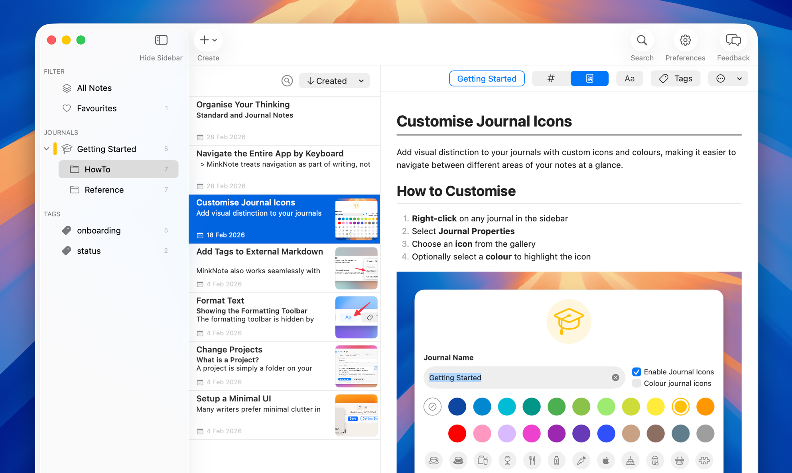

MinkNote is a native macOS app, private by default, and built on plain Markdown files. No databases, no lock-in, just your files.

MinkNote stores everything as plain Markdown files on your Mac. Your knowledge stays readable today and ten years from now, with no proprietary formats and no export step required.
MinkNote is designed for keyboard-first navigation. Move instantly between journals, notes, and the editor without touching the mouse. Your ideas stay in motion.
MinkNote keeps your structure simple. No hidden databases. No mysterious sync systems. Just a clear setup you can understand at a glance.
Native macOS. Private by default. Plain Markdown files. Start organising your knowledge with MinkNote.
Your notes are plain files you own on your Mac.
Open, switch, and organise multiple projects without moving your files.
Structure your notes with journals and folders that reflect how you think.
Choose between Standard and Journal notes, depending on whether time matters.
Switch seamlessly between Markdown and rich text, with a live preview when you need it.
Show the formatting toolbar when you need it, and hide it when you don't.
Create and edit Markdown tables with the flexibility you expect from a full editor.
Drag, drop, and paste images directly into your notes.
Move notes between journals and folders while keeping images and attachments together.
Use tags and favourites to quickly group, highlight, and revisit what matters most.
Three focused search options help you find exactly what you need, right when you need it.
Move between journals, notes, and the editor using simple keyboard shortcuts. Stay focused and keep your hands on the keys.
Not a silly question at all! MinkNote follows the same strict security guidelines as the Mac App Store — everything is sandboxed. You don't have to click any "trust this developer" dialogs, and MinkNote doesn't require Full Disk Access.
The way it works: MinkNote can read and write to any folder you choose, but you specify that folder yourself via the Open Panel dialog. The action button carries the system label "Grant Access", which means you allow the app to read/write to just that one directory. MinkNote remembers which directories you've granted access to, so you only need to do this once per folder.
If you're comparing feature lists, Obsidian is clearly more mature. It's been around longer, has a large community, and offers a very broad set of capabilities.
Where MinkNote aims to be different is in how it feels to use on macOS. MinkNote is a fully native Mac app and follows many platform conventions that macOS users expect. Keyboard navigation — moving between journals, between notes, switching focus with Tab / Shift+Tab — is built in and consistent in a way Obsidian doesn't replicate.
Another difference is philosophy. In Obsidian, many core behaviours rely on third-party plugins. While that ecosystem is powerful, it can feel heavyweight or harder to reason about from a security and maintenance point of view. MinkNote intentionally keeps more functionality built in.
Finally, Obsidian is Electron-based — a perfectly valid choice, but it does use more system resources than a native app, something many Mac users are sensitive to.
That said, Obsidian absolutely has features MinkNote doesn't yet, and many are on the roadmap. The goal with MinkNote isn't to compete on breadth, but to offer a calmer, more Mac-native experience.
MinkNote is free to try for 14 days with every feature unlocked. After the trial ends, your notes remain fully accessible in read-only mode, so nothing is locked away or trapped in a subscription. If you’d like to keep editing and unlock Pro features, see the pricing options.
Completely. MinkNote is a local-first app and requires no internet connection to function. All your notes are plain files on your Mac. If you use iCloud Drive to store your notes folder, macOS handles sync in the background — but MinkNote itself never phones home.
Nothing bad — your notes are just plain .md Markdown files sitting in a regular folder on your Mac. Every text editor on the planet can open them: Typora, iA Writer, VS Code, even TextEdit. There's no export step, no proprietary format, no lock-in of any kind.
MinkNote is currently focused on the Mac. iPhone and iPad support is planned once the Mac app reaches feature completeness, allowing documents to move seamlessly between Apple devices.
In the meantime, you can open your Markdown files with any compatible iOS app. I’ve had good results with 1Writer, which costs $5. I’m not affiliated with its developer.